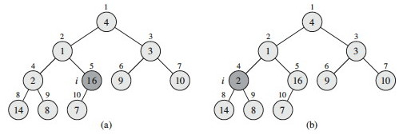
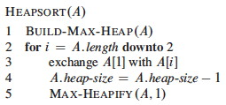
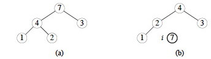
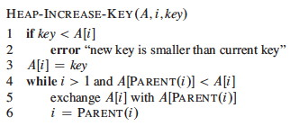

Heaps are a useful data structure with applications to sorting and priority queues.
They are nearly complete binary trees that satisfy a heap property that organizes data under a partial ordering of their keys, enabling access to items with maximum (or minimum) keys without having to pay the cost of fully sorting the keys.
Heaps are not to be confused with garbage collected storage (a heap of garbage)!
Conceptually, heaps are nearly complete binary trees: they are complete at all levels except perhaps the lowest, in which the leaves at the bottommost level l lie in the leftmost positions of l. (Note that this is not the same as a full binary tree.) Consequently they have leaves on at most two adjacent levels l-1 and l. For example:
These quantitative properties concerning full and nearly complete binary trees will be useful (numbers in parentheses refer to problems in CLRS: only the public solutions are given here):
As discussed in Topic 8, a complete binary tree has at most 2h+1 − 1 nodes (vertices). We can see this by adding up the number of nodes at each level: 20 + 21 + ... + 2h for a complete binary tree of height h. Then apply formula A.5 with x=2 and n=h:

You get (2h+1 − 1) / (2 − 1) = 2h+1 − 1.
So, a nearly complete binary tree has at most 2h+1 − 1 nodes (if it is complete, as analyzed above). The fewest number of nodes it can have at height h is when the last level has just 1 node and the level before it is complete. Do the math for a complete binary tree of height h−1: there are exactly 2h − 1 nodes in levels 1 to l−1 and one more node in the lth level, for a total of 2h nodes.
In summary, a nearly complete binary tree may have between 2h and 2h+1 − 1 nodes (vertices).
Given an n-node nearly complete binary tree of height h, from 6.1-1:
2h ≤ n ≤ 2h+1 − 1 < 2h+1
Taking the log of the first, second and last terms,
h ≤ lg n < h + 1
Since h is an integer, h = ⌊lg n⌋ (Notice the "floor" notation.)
An n-node nearly complete binary tree has ⌈n/2⌉ leaves. (Notice the "ceiling" notation. Proof left as exercise.)

The height of a node is the number of edges on the longest downward path from the node to a leaf.
There are at most ⌈n/2h+1⌉ nodes of height h in a nearly complete binary tree. (A proof by contradiction is possible.) For example, in the tree shown there are ⌈15/22+1⌉ = ⌈15/8⌉ = 2 nodes of height 2.
Depending on whether it is a max heap or a min heap, to be a heap the binary tree must also satisfy a heap property:
Heaps are usually represented using arrays, following the mapping shown by the indices in the tree:


The fact that we can see a heap both as a binary tree and as an array is an example of a powerful pattern in computer science:
mapping between an implementation representation that has efficient computational properties (e.g., the array) and a conceptual representation that fits how we think about a problem (e.g., the tree).

If a heap is stored in array A, then movement in the tree is easy (trace out examples in the figures above):
These index operations can be computed efficiently in binary number representations by left and right shifts and setting the low order bit.
By the number of leaves fact, when an n-item heap is stored in the array representation, the leaves are the nodes indexed by ⌊n/2⌋ + 1, ⌊n/2⌋ + 2, ..., n. (Proof left as exercise.)
This fact will be used in algorithms that only need to process either the leaves or the internal nodes of a heap.
MAX-HEAPIFY is used to maintain the max-heap property by addressing a possible violation at node A[i]:

It works by comparing A[i] with its left and right children (lines 3-7), and if necessary swapping A[i] with the larger of the two children to preserve the heap property (lines 8-9). Tail recursion after the swap propagates this change until the subtree is a heap (line 10).
Max-Heapify from the node at index 2 (containing 4):

It is easy to see that the body of each call before recursion is O(1), and the recursion repeats this for at most O(lg n) nodes on any path from the root to the leaves. (CLRS provide a more formal proof, using a recurrence relation and the Master Theorem.)
Suppose we load some keys into an array in arbitrary order from left to right, creating an almost complete binary tree that may not satisfy the heap property.
Each leaf of the corresponding tree is trivially a heap. If we call MAX-HEAPIFY on the parents of the leaves, the assumption that the right and left subtrees are heaps is met. Once MAX-HEAPIFY returns, the parents are roots of heaps too, so we call it on their parents.
Using the previously established result (6.1-7) that the leaves begin in the array at index ⌊n/2⌋ + 1, so the last non-leaf node is at ⌊n/2⌋, the implementation is trivial:

The "downto" ensures that we heapify both subtrees of any given node before we try to heapify at that node itself.

Let's trace this on an array of size 10, for i = 5 downto 1, The starting array (randomly ordered) is shown to the right:
(a) The heap rooted at vertex or array index 5 is already a max heap: no change is made.
(b) The heap rooted at index 4 is not a max heap: the value 2 is smaller than its children. We restore the max heap property by swapping 2 with the larger child key, 14 (see next figure for result). If we had swapped with 8, it would not be a max heap: this is why we always swap with the larger child.

(c) Decrementing i to 3, there is another violation of the max heap property, and we swap value 3 at index 3 with value 10 at index 7 (the larger child).
(d) The heap at index 2 violates the max heap property: we must propagate the value 1 down by swapping with 16, and then with 7 in a recursive call to Max-Heapify (see next figure).

(e) Finally, checking the value at index 1 (value 4) against its children, we find we need to swap it with value 16 at index 2, and then with value 14 at index 4 and value 8 at index 9 in two recursive calls to Max-Heapify. (f) shows the resulting max heap.
Sometimes a good approach is to prove an easy bound and then tighten it.
It is easy to see that there are O(n) (about n/2) calls to MAX-HEAPIFY, and we already know that MAX-HEAPIFY on a tree of height O(lg n) is O(lg n). Therefore an upper bound is O(n lg n).
However, only the root node and those near it are at height O(lg n). Many nodes are close to the leaves and we don't even process half of them. So let's try for a tighter bound ...
There are no more than ⌈n/2h+1⌉ nodes of height h (Exercise 6.3-3), and the heap is ⌊lgn⌋ high (Exercise 6.1-2). MAX-HEAPIFY called on a node of height h is O(h), so we need to sum this cost times the number of nodes at each h for all relevant h:

We can simplify this as follows:
Tricky, huh? Now maybe you can see why the text authors write that as:

The above summation runs up to ⌊lgn⌋, but we would like to use a convenient formula A-8, shown below, which runs up to ∞:

Since big-O implies an inequality (upper bound), we can go ahead and run the summation to ∞ instead of ⌊lgn⌋, because all of the additional terms are positive (and also very small), so the inequality will be maintained. Then, if we let x = 1/2 (since h/2h = h(1h/2h) can be written as h(1/2)h), we get:

Thus our big-O expression simplifies to O(n*2) = O(n), which is a tighter bound than O(n lg n). The same analysis appliles to the min-heap version.
You might wonder why we can build a heap in O(n) time when sorting takes O(n lg n), as will be proven in Topic 10. This is because a heap is only a partial order, so less work needs to be done to guarantee the heap property. But we can use a heap to sort, as illustrated below.
Suppose A[1..n] contains keys to be sorted. If we call BUILD-MIN-HEAP on this array, the item with the minimum key will be at A[1]. We could extract the minimum, reheaping in the process, copy the extracted item to a results array, and repeat to extract the next smaller keyed item. But it turns out a more elegant solutionm is possible with a MAX heap that sorts the array in place:
Suppose again that A[1..n] contains keys to be sorted. If we call BUILD-MAX-HEAP on this array, the item with the maximum key will be at A[1]. We can swap it with the item at A[n], then repeat on A[1..n-1] (reducing the size of the heap by 1 each iteration) until this reaches size 1.
BUILD-MAX-HEAP is O(n) (by analysis above). The for loop executes n-1 times, with O(1) exchange each iteration and a call to O(lg n) MAX-HEAPIFY, totaling O(n lg n) for the loop. Thus heapsort is O(n + n lg n)= O(n lg n).
Suppose we have an array A with five integers. First, BUILD-MAX-HEAP is called on it, resulting in the array A = [7, 4, 3, 1, 2] shown as the tree in (a) below.
Then the loop of HEAPSORT successively takes out the maximum from the first index by swapping it with the last item in the heap, and calls MAX-HEAPIFY. So, 7 is swapped with 2, and then the heap (now one smaller) is reconstructed, resulting in the heap shown in (b): A = [4, 2, 3, 1, 7], with the first four items being the heap.

The maximum item 4 (from b) was swapped with the minimum item 1 (removing 4 from the heap) and the heap restored, resulting in (c) A = [3, 2, 1, 4, 7] with the first three items being the heap. Then in (d), the max item 3 was swapped with 1 and the heap restored by percolating 1 down: A = [2, 1, 3, 4, 7] with the heap being the first two items.

(e) Finally, the maximum item 2 is removed by swapping with the only remaining item 1, resulting in the sorted array shown.
Here is a playing card demonstration of heap sort. However, unlike the above code, this card demonstration builds a min-heap to sort the cards with the card of maximum value ending up at the top of the stack of cards.
An important application of heaps is implementing priority queues. There are min and max versions.
A max-priority queue is an ADT with the following operations:
A min-priority queue has corresponding operations MINIMUM, EXTRACT-MIN, and DECREASE-KEY.
Max-priority queues can be used in job scheduling: the highest priority job is always run next, but job priority can be increased as a job ages in the queue, or for other reasons.
Min-priority queues will be very important in graph algorithms we cover later in the semester: efficient implementations of EXTRACT-MIN and DECREASE-KEY will be especially important.
Min-priority queues are also used in event-driven simulations, where an event may generate future events, and we need to simulate the events in chronological order.
In the array representation, MAXIMUM is trival to implement in O(1) by returning the first item of the array. However, if we EXTRACT-MAX we need to restore the heap property afterwards.
HEAP-EXTRACT-MAX takes the root out, replaces it with the last item in the heap (stop and think: why this item?), and then uses MAX-HEAPIFY to propagate that item (which probably has a small key) down to its proper place:

HEAP-EXTRACT-MAX is O(lg n) since there is only constant work added to the O(lg n) MAX-HEAPIFY.
An increase to the key may require propagating the item up the tree (the opposite direction as compared to MAX-HEAPIFY):
This is clearly O(lg n) due to following a simple path up the tree. Let's work this example, where the item at i has its key increased from 4 to 15, and then it is propagated up:

This propagation follows the "Peter Principle": the claim that persons in a hierarchical organization are promoted through the ranks of management until they reach their level of incompetency!!!
When inserting, we are going to have to make the heap bigger, so let's add the item at the end and propagate it up to where it belongs.
HEAP-INCREASE-KEY already has the code for this propagation, so if we set the key to the smallest possible value and then try to increase it with HEAP-INCREASE-KEY, it will end up in the right place:

Again, this is O(lg n).
In Topic 10 we wrap up our examination of sort algorithms with Quicksort, a practical sort that performs well in practice and also illustrates the value of probabilistic analysis and random algorithms.
We will return to other kinds of trees, in particular special kinds of binary search trees that are kept balanced to guarantee O(lg n) performance, in Topic 11.